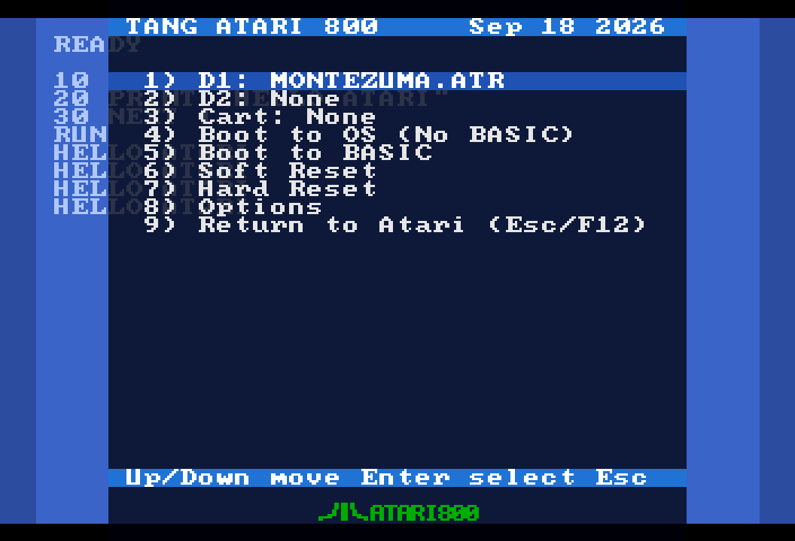
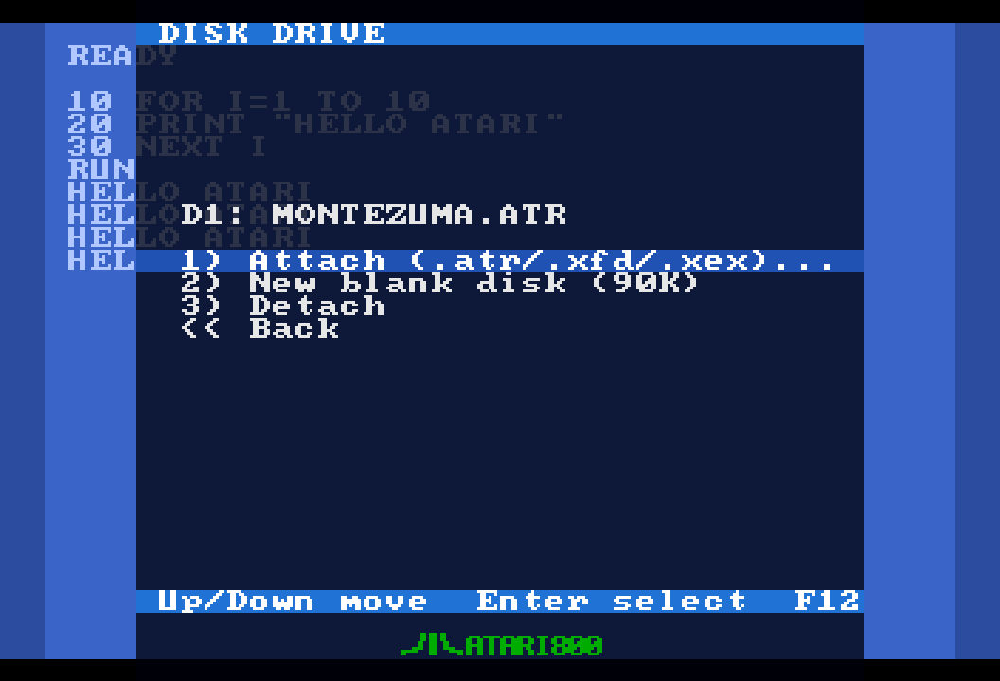
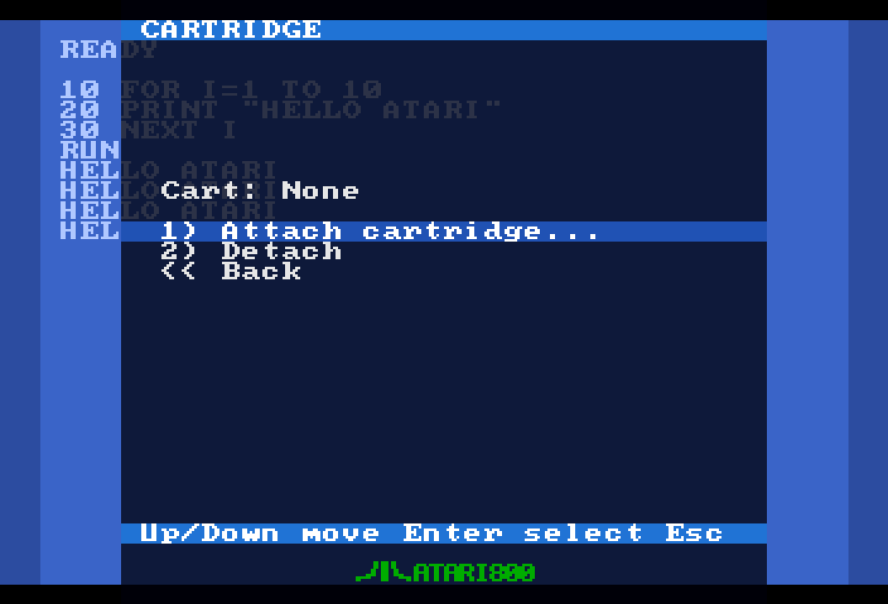
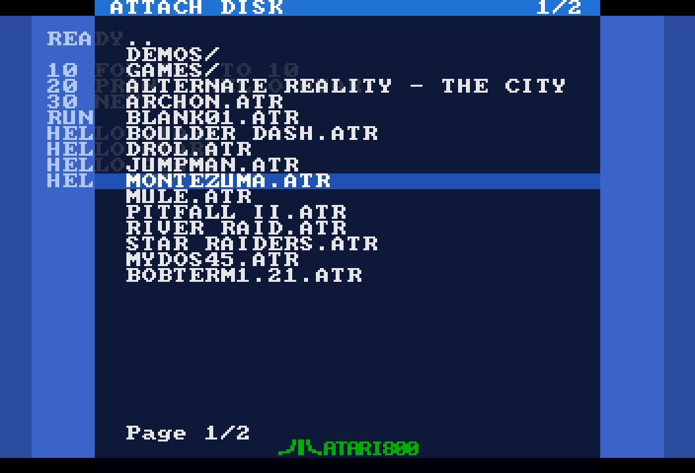
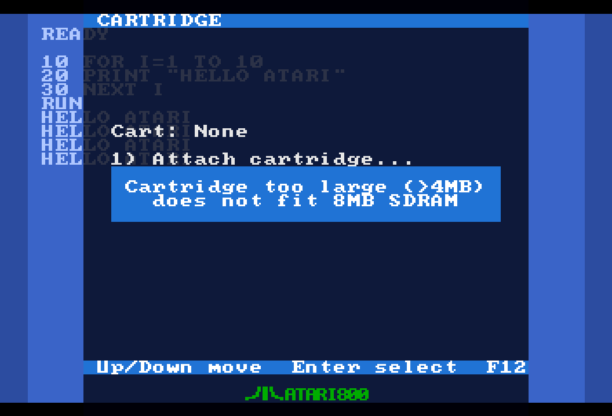

4. El menú OSD
El menú en pantalla (OSD, on-screen display) es donde adjuntas discos y cartuchos, reinicias la máquina y cambias opciones, todo mientras el Atari sigue corriendo detrás.
Abrir y cerrar el menú
El Atari arranca primero, sin mostrar ningún menú. Para abrir el OSD, pulsa F12 en el teclado o el botón S2 de la placa (el botón de más a la derecha de la Tang Nano). Cualquiera de los dos abre y cierra el menú, desde cualquier pantalla dentro de él. Esc (v3.1.1) también lo cierra: desde un submenú vuelve al menú principal, desde el menú principal cierra el OSD, y con el OSD cerrado sigue siendo la tecla Escape del Atari. El último elemento del menú principal, 9) Return to Atari (Esc/F12) (volver al Atari), también lo cierra.
Navegación
Puedes manejar todo el OSD desde un teclado, desde un joystick DB9 en el puerto 1, o con ambos:
| Acción | Teclado | Joystick 1 |
|---|---|---|
| Mover la selección arriba / abajo | ↑ ↓ | Palanca arriba / abajo |
| Seleccionar el elemento resaltado | Enter | Fire (botón de disparo) |
| Página anterior / siguiente (explorador de archivos) | ← → | Palanca izquierda / derecha |
| Cambiar un valor izquierda/derecha (Options) | ← → | Palanca izquierda / derecha |
| Abrir / cerrar el OSD | F12; cerrar también con Esc | Botón S2 de la placa |
Todos los submenús tienen una entrada << Back (volver), y el explorador de archivos tiene .. (o << Back en el nivel superior). Con esto basta para arrancar juegos y montar discos sin ningún teclado conectado.
El aspecto

Desde la v3.0 el menú se dibuja en un panel atenuado sobre la imagen en vivo del Atari, de modo que se mantiene legible sobre cualquier juego. La barra de título azul indica la pantalla actual (TANG ATARI 800 en el menú principal, con la fecha de compilación del firmware a la derecha), la barra de pie de página te recuerda las teclas (Up/Down move Enter select F12), y la fila seleccionada es una barra azul de ancho completo. Los mensajes emergentes son paneles sólidos del mismo azul.
El menú principal
| Elemento | Qué hace |
|---|---|
| 1) D1: / 2) D2: | Muestran lo que está adjuntado en las unidades de disco 1 y 2 (None cuando están vacías; una imagen de solo lectura se marca con (RO)). Al seleccionar una se abre el menú de la unidad. |
| 3) Cart: | Muestra el cartucho adjuntado (None cuando no hay ninguno). Al seleccionarlo se abre el menú del cartucho. |
| 4) Boot to OS (No BASIC) | Arrancar el OS sin BASIC: recarga las ROM del OS y de BASIC y arranca el Atari en frío con la tecla OPTION pulsada, de modo que BASIC queda desactivado, igual que mantener OPTION en un XL real. Úsalo para arrancar un disco de DOS o un disco de juego que no quiera a BASIC estorbando. |
| 5) Boot to BASIC | Arrancar en BASIC: recarga las ROM y arranca en frío en BASIC (sin OPTION pulsada). |
| 6) Soft Reset | Reinicio en caliente: lo mismo que hace la tecla RESET en un Atari real. F9 hace esto desde dentro de un juego sin abrir el menú. |
| 7) Hard Reset | Reinicio en frío: la máquina se reinicia como si se hubiera apagado y vuelto a encender, y el cartucho emulado también se apaga y enciende (ver más abajo). Además aplica un cambio de tamaño de RAM. |
| 8) Options | Abre la pantalla de Opciones. |
| 9) Return to Atari (Esc/F12) | Cierra el menú. Esc, F12 y S2 hacen lo mismo desde cualquier parte (Esc primero retrocede un nivel cuando estás en un submenú). |
Boot OS frente a Boot BASIC, con un cartucho adjuntado
Ambos elementos Boot recargan las ROM desde la tarjeta SD y reinician la máquina en frío. Con un cartucho adjuntado, ambos arrancan el cartucho: un XL real hace lo mismo, porque el cartucho toma el control del arranque. Desconecta (Detach) el cartucho si quieres recuperar BASIC.
Soft Reset frente a Hard Reset
| Soft Reset / F9 | Hard Reset | |
|---|---|---|
| Tipo de arranque | Reinicio en caliente (como la tecla RESET) | Arranque en frío (como apagar y volver a encender) |
| Cartucho | No se entera del reset: el puerto de cartucho del XL no tiene línea de reset. Un cartucho multijuego que se desactivó a sí mismo para ejecutar un juego sigue desactivado, así que terminas en BASIC o en el Self Test, exactamente como en el hardware real (y como F5 en Altirra). | Se apaga y vuelve a encender: banco 0, habilitado. El menú de un cartucho multijuego vuelve a aparecer, como en un apagado y encendido real (Shift+F5 en Altirra). |
| Cambio de tamaño de RAM | No se aplica | Se aplica |
El menú de la unidad (D1: / D2:)

- Attach (.atr/.xfd/.xex)... (adjuntar): abre el explorador de archivos filtrado a imágenes de disco y ejecutables. Al escoger un
.atro.xfdse monta en esta unidad de inmediato, sin reiniciar: el Atari sigue corriendo y el nuevo disco simplemente está ahí; cambia el disco 2 de un juego en D1: cuando el juego lo pida. Si ya había un disco en la unidad, se reemplaza. Al escoger un.xexen D1: se arranca en frío directamente en el programa (ver Ejecutables). - New blank disk (90K) (nuevo disco en blanco): crea un ATR nuevo, sin formatear, de 90K y densidad simple en la raíz de la tarjeta SD, con el nombre
BLANK01.ATR,BLANK02.ATR, … (el primer nombre libre hasta 99), y lo monta en esta unidad. Formatéalo desde tu DOS y tendrás un disco escribible sin tocar un PC. El disco que había antes en la unidad se desconecta. Si los 99 nombres están ocupados el menú muestraNo free name. - Detach (desconectar): quita la imagen de la unidad, en vivo, sin reiniciar. Si la unidad está vacía obtienes
Drive is empty. - << Back: vuelve al menú principal.
Adjuntar y desconectar discos nunca reinicia la máquina. Para arrancar desde el disco que adjuntaste, usa 4) Boot to OS (No BASIC) en el menú principal (Hard Reset arranca con BASIC habilitado, cosa que la mayoría de los discos no quiere); ver Discos.
El menú del cartucho (Cart:)

- Attach cartridge... (adjuntar cartucho): abre el explorador de archivos filtrado a
.cary.rom. En cuanto se carga un cartucho el Atari arranca en frío directamente en él y el menú se cierra. Si el archivo se rechaza (demasiado grande, tipo no soportado, tamaño incorrecto) un mensaje emergente explica por qué y te quedas en el explorador. - Detach (desconectar): quita el cartucho y arranca en frío de vuelta en BASIC. Sin ningún cartucho adjuntado obtienes
No cartridge inserted. - << Back: vuelve al menú principal.
A diferencia de los discos, un cambio de cartucho siempre reinicia la máquina: el cartucho forma parte del mapa de memoria en el arranque. Los detalles, formatos y límites están en Cartuchos.
El explorador de archivos

El explorador se abre en la raíz de la tarjeta SD. Su barra de título dice ATTACH DISK o ATTACH CARTRIDGE según de dónde vengas, con un contador de páginas n/N a la derecha.
- Qué se lista: carpetas (mostradas con una
/al final) y solo los archivos que tienen sentido en este contexto:.atr,.xfdy.xexpara una unidad,.cary.rompara el cartucho. Los archivos ocultos y de sistema se omiten. - Carpetas: selecciona una carpeta para entrar en ella. La primera entrada, .., vuelve a la carpeta superior; en la raíz dice << Back y regresa al menú.
- Páginas: 24 entradas por página. ←/→ (o palanca izquierda/derecha) cambian de página de inmediato; mover ↓ más allá de la última entrada pasa a la página siguiente y ↑ más allá de la primera va a la anterior.
- Nombres largos: los nombres de archivo largos se muestran truncados a 28 caracteres. Los archivos pueden estar en cualquier lugar de la tarjeta, en cualquier carpeta.
- Salir: F12 o S2 vuelven al menú principal en cualquier momento.
Si una imagen de disco no se puede montar, aparece una línea breve Mount failed al pie del explorador y puedes escoger otro archivo.
Mensajes emergentes

Los errores y confirmaciones aparecen como un panel sólido en el centro de la pantalla, por ejemplo Cartridge too large (>4MB), Unsupported CAR type 42 o Disk is read-only / Writes will fail (144). Pulsa Enter o Fire para cerrarlo y continuar.